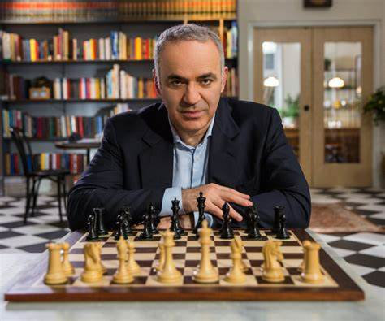

Chess is a classic board game played by two players, referred to as White and Black, who each command their own set of chess pieces in their respective color. The primary objective is to achieve checkmate, which involves placing the opponent's king in a position where it is unable to escape capture. The game is sometimes referred to as international chess or Western chess to distinguish it from similar games like xiangqi and shogi. Its origins can be traced back to chaturanga, a similar game that emerged in seventh century India. The rules of modern chess were developed and standardized in Europe during the late 15th century, gaining universal acceptance by the late 19th century. Today, chess enjoys immense popularity worldwide, with millions of people engaging in the game.
Chess is an ancient board game that has a rich and fascinating history dating back over a millennium. Its origins can be traced to northern India in the 6th century, where it was known as "Chaturanga." Chaturanga was a strategic game played on an 8x8 checkered board with different types of pieces representing the four divisions of the Indian army: infantry, cavalry, elephants, and chariotry.
From India, the game spread to Persia, where it was known as "Shatranj" and underwent some modifications. It gained popularity in the Islamic world, and in the 8th century, it reached the Islamic Caliphate of Baghdad, becoming a favorite pastime of the ruling elite.
During the Islamic Golden Age, the rules of Shatranj were standardized, and the game began to spread across Europe through trade and conquest. By the 9th century, it had reached Spain, and in the following centuries, it gained popularity throughout the continent.
The modern rules of chess started to emerge in Europe during the 15th century. The queen gained more mobility and became the most powerful piece, and the moves of other pieces, such as the bishop and the pawn, were modified. These changes made the game faster and more dynamic, contributing to its enduring appeal. Chess became a symbol of nobility and intellect during the Renaissance, and it gained a reputation as the "King's Game." It was played by kings, queens, and scholars, and various treatises on chess strategy and tactics were written during this time.
In the 19th century, organized competitive chess started to take shape. Tournaments began to be held, and the first official World Chess Championship took place in 1886, with Wilhelm Steinitz becoming the champion. Since then, the World Chess Championship has been held regularly, with notable champions like Emanuel Lasker, José Capablanca, Alexander Alekhine, Mikhail Botvinnik, Bobby Fischer, Anatoly Karpov, Garry Kasparov, Viswanathan Anand, Magnus Carlsen, and others.
The rise of technology in the 20th century brought significant changes to chess. Chess-playing computers and software programs became increasingly powerful, culminating in the famous match between IBM's Deep Blue and Garry Kasparov in 1997, which Deep Blue won. This event marked a turning point in human-computer competition and demonstrated the capabilities of artificial intelligence in chess.
Today, chess is a global phenomenon enjoyed by millions of people worldwide. It is played both recreationally and competitively, with numerous international tournaments held regularly. The accessibility of online platforms and chess apps has further popularized the game, allowing players of all skill levels to connect and compete with each other across the globe.
CHESS PIECE AND MOVEMENT
KING
-The king is the most important piece in the game of chess. Its objective is to avoid being checkmated, which means being in a position where it is under attack and cannot escape capture.
-At the beginning of the game, each player starts with one king, which is placed on the first rank (also known as the back rank) of their side of the board, in the center between the rooks. The king moves one square in any direction, horizontally, vertically, or diagonally. It has the most restricted movement of all the chess pieces.
-The king has a special move called castling, which can be done under certain conditions. Castling involves moving the king two squares towards a rook on its initial square and then placing the rook on the square the king crossed. There are two types of castling: kingside castling, which involves the king moving two squares towards the rook on its right, and queenside castling, which involves the king moving two squares towards the rook on its left. Castling is subject to specific conditions: neither the king nor the rook involved in the castling can have moved before, the squares between the king and the rook must be unoccupied, and the king cannot be in check or move through attacked squares.
QUEEN
-The queen is the most powerful and versatile piece on the chessboard. It combines the abilities of both the rook and the bishop, making it an incredibly valuable asset.
-At the start of the game, each player begins with one queen. The queen is placed on the square of its own color, i.e., white queen on a white square and black queen on a black square. For standard chess, the queen starts on the d1 square for white and the d8 square for black.
-The queen can move in any direction horizontally, vertically, or diagonally along any number of unobstructed squares. It has no restrictions on distance or number of squares it can move, as long as its path is clear.
-The queen captures an opponent's piece by moving to the square occupied by that piece, just like other pieces. It captures in the same manner as it moves, by occupying the square of the captured piece.
-The queen has a far-reaching attack range due to its ability to move in multiple directions. It can control a significant number of squares on the board and exert pressure on the opponent's pieces.
-The queen's versatility allows it to participate in various tactical and strategic maneuvers. It can support attacks, defend key squares, initiate threats, and contribute to checkmating combinations. The queen's flexibility makes it a potent force during both the opening and endgame phases of a chess game.
-It's important to note that the queen's power and mobility make it a prime target for attacks. Opponents will often try to target and challenge the queen, so it should be carefully protected and positioned throughout the game.
BISHOP
-The bishop is one of the six different types of chess pieces and is known for its diagonal movement.
-At the beginning of the game, each player starts with two bishops one on a light-colored square (often called the "light-squared bishop") and the other on a dark-colored square (often called the "dark-squared bishop"). The light-squared bishop starts on a light square, usually c1 for white and c8 for black, while the dark-squared bishop starts on a dark square, usually f1 for white and f8 for black.
-The bishop moves diagonally across the board, staying on the squares of the same color it started on. This means that the light-squared bishop will always remain on light-colored squares, and the dark-squared bishop will always remain on dark-colored squares.
-The bishop can move any number of squares diagonally, as long as its path is clear and there are no obstructions in its way. It can move both forward and backward along the diagonal.
-The bishop's power lies in its ability to control squares along diagonals. Depending on its position on the board, a bishop can influence and attack multiple squares simultaneously, making it an effective piece for long-range attacks.
-Bishops are unique in that they are confined to squares of a single color throughout the game. This means that if a player starts with bishops on light and dark squares, their movements will always remain limited to those respective colored squares.
-Bishops are considered minor pieces but can play a significant role in chess strategy. They are particularly strong when positioned on open diagonals, as they can control key central squares and attack multiple targets simultaneously.
HORSE
-The horse, more commonly known as the knight, is a unique chess piece known for its distinctive L-shaped movement.
-At the start of the game, each player begins with two knights. The knights are placed on the squares adjacent to the corners, next to the rooks. For standard chess, the knights start on b1 and g1 for white and b8 and g8 for black.
-The knight moves in an L-shape, consisting of two squares in a straight line in one direction (horizontal or vertical) and then one square perpendicular to that direction. The knight can move to any square that is two squares away horizontally or vertically, and then one square away perpendicular to that.
-Unlike other chess pieces, the knight has the unique ability to jump over other pieces. It can move to its destination square regardless of whether the squares in between are occupied.
-When the knight moves to a square occupied by an opponent's piece, it captures that piece. The capturing process is the same as its movement, with the knight landing on the square of the captured piece.
The knight's L-shaped movement allows it to access squares that other pieces cannot reach. It is particularly effective in close combat, as it can leap over obstacles and attack pieces that are guarded by others. The knight's versatility makes it valuable in both defensive and offensive situations.
-The knight can attack squares that are two squares away from its current position, followed by a one-square move in a perpendicular direction. This allows the knight to threaten pieces that are positioned diagonally, vertically, or horizontally.
-The knight's movement is often described as "two squares forward, one square to the side," or vice versa. It is the only piece in chess that can jump over others, which gives it a unique tactical advantage.
ROOK
-The rook is a powerful chess piece that moves horizontally and vertically along ranks and files.
-At the beginning of the game, each player starts with two rooks. The rooks are placed on the corners of the board, occupying the a1 and h1 squares for white and a8 and h8 squares for black.
-The rook moves in a straight line along ranks (horizontal rows) and files (vertical columns) on the chessboard. It can move any number of squares horizontally or vertically, as long as its path is clear and unobstructed.
-When the rook moves to a square occupied by an opponent's piece, it captures that piece. The capturing process is the same as its movement, with the rook landing on the square of the captured piece.
-The rook has a long-range attack capability. It can control an entire rank or file, influencing and threatening multiple squares in its line of sight. The rook's horizontal and vertical movement make it particularly effective for controlling open files, creating threats, and supporting other pieces.
-The rook plays a crucial role in a special move called castling, which involves the king and the rook. Castling allows the king to move two squares towards a rook and the rook to move to the square the king crossed. It is subject to specific conditions: neither the king nor the rook involved in the castling can have moved before, the squares between the king and the rook must be unoccupied, and the king cannot be in check or move through attacked squares.
-The rook's movement is straightforward but highly influential. Its ability to control ranks and files makes it a key piece for developing strong positions, launching attacks, and defending important areas of the board. Rooks are particularly effective when they are connected or doubled on open files, creating potential threats and exerting pressure on the opponent's position.
PAWN
-The pawn is the most numerous chess piece and has unique characteristics compared to other pieces.
-At the beginning of the game, each player starts with eight pawns, arranged in a row in front of the other pieces. The pawns occupy the second rank (rank 2 for white, rank 7 for black) on the chessboard.
-Pawns move forward in a straight line, but their movement differs depending on the phase of the game:
On its first move, a pawn can advance one or two squares forward along its current file (vertical column). For example, a white pawn on e2 can move to either e3 or e4 if both squares are unoccupied. Black pawns on e7 can move to either e6 or e5.
Subsequent Moves: After the initial move, pawns can only move one square forward along their current file.
Capturing: Pawns capture pieces that are one square diagonally in front of them. For example, a white pawn on e4 can capture a black piece on d5 or f5. Pawns cannot capture pieces directly in front of them.
En Passant: En passant is a special pawn capture that can occur under specific circumstances. If an opponent moves a pawn forward two squares from its starting position and lands next to one of your pawns, you have the opportunity to capture the opponent's pawn as if it had only moved one square forward. This capture must be made immediately after the opponent's pawn moves, or the opportunity is lost.
-When a pawn reaches the opposite end of the board (the eighth rank), it can be promoted to any other chess piece (except a king). Typically, players choose to promote a pawn to a queen, as it is the most powerful piece. Promotion allows pawns to transform into more influential pieces and greatly impacts the dynamics of the game.
-Pawns play a significant role in chess strategy. They can be used to control the center of the board, create pawn chains, block opponent's pieces, and open lines for other pieces. Their initial placement and subsequent moves greatly influence the dynamics of the game, and their promotion can lead to game-changing outcomes.
Here are some tutorials videos on how to play chess!
CHESS RULES
Board Setup
Chess is played on a square board consisting of 64 alternating light and dark squares. Each player starts with 16 pieces: one king, one queen, two rooks, two knights, two bishops, and eight pawns.
Objective
The objective of the game is to checkmate the opponent's king. Checkmate occurs when the king is under attack (in check) and has no legal moves to escape capture. The player who checkmates their opponent's king wins the game.
Special Moves:
Castling: The king and one of the rooks can perform a move called castling once per game. Castling involves moving the king two squares towards a rook and placing the rook on the square the king crossed. Certain conditions must be met for castling to be legal.
En Passant: If an opponent's pawn moves two squares forward from its starting position and lands next to your pawn, you have the opportunity to capture the opponent's pawn en passant, as mentioned earlier.
Turns
Players take turns moving their pieces, starting with white. Each player can make one move per turn, except during special cases like castling or capturing en passant.
Check
If a player's king is under direct attack by an opponent's piece, it is considered "in check." The player must make a move to remove the king from check on their next turn. Ignoring a check is not allowed.
Stalemate
If a player's king is not in check, but they have no legal moves to make, the game ends in a stalemate. A stalemate results in a draw, and neither player wins.
Draw
Besides a stalemate, a game can end in a draw if:
The players agree to a draw.
There is insufficient material to checkmate (e.g., only kings remaining).
A position is repeated three times with the same player to move.
Fifty consecutive moves are made without any pawn move or capture.
These are the basic rules of chess. However, there are additional rules and concepts, such as pawn promotion, notation, time controls, and more, that can enhance the understanding and complexity of the game. The rules of chess are published by FIDE (Fédération Internationale des Échecs; "International Chess Federation"), chess's world governing body, in its Handbook. Rules published by national governing bodies, or by unaffiliated chess organizations, commercial publishers, etc., may differ in some details. FIDE's rules were most recently revised in 2023.
FAMOUS CHESS PLAYERS
GARRY KASPAROV

Garry Kasparov was the greatest to ever touch the pieces. He was a killer at the board because of his aggressive style and energy. He was the most dominating force in chess for almost 20 years. An undisputed #1 who broke numerous records.
In the span between 1981 to 1990, he took the first place in 15 consecutive tournament. Don’t forget that during that period he also played 5 matches against Anatoly Karpov. From 1998 to 2001, he won 10 consecutive super tournament. In the Olympiads he has won 5 individual gold medals, and Russia won the chess Olympiad all eight times when Kasparov played for the team.
Garry Kasparov was the number one rated player in the world for 2 decades. His domination started in 1985 and ended virtually with his retirement in 2005.
Although retired, Garry has managed to create his own masterclass to help chess players of all level around the world get better at chess. After beating Bobby Fischer’s peak rating and outranking his fiercest competitors for over twenty years, Garry is now ready to share the chess strategy that made him a six-time world champion. Through detailed lessons, including his favorite openings and advanced tactics, you will develop the instincts and philosophy to become a stronger player
ANTHONY KARPOV
Anatoly Karpov is the most underrated World Chess Champion in history. His stats against the almighty Kasparov was 21 wins, 28 losses and 121 draws. Therefore, he was as close as one could possibly be. Anatoly Karpov won the world championship title without the final match.
Unlike Fischer who felt that he had been handed the title, Karpov wanted to prove that he is worthy of it. In the next decade, Karpov entered every major tournament and won the majority of them. To illustrate Karpov’s dominance over his peers as champion, his scores were as follows:
OPPONENT
WIN
LOSE
DRAW
Hubner
5
0
0
Andersson
6
1
0
Smyslov
3
1
0
Tal
1
0
16
Jubo jevic
10
2
0
MAGNUS CARLSEN
Sven Magnus Carlsen (born 30 November 1990) is a Norwegian chess grandmaster who is a former five-time World Chess Champion (2013–2023) and current four-time World Rapid Chess Champion and six-time World Blitz Chess Champion. Carlsen has held the No. 1 position in the FIDE world chess rankings since 1 July 2011 and trails only Garry Kasparov in time spent as the highest-rated player in the world. His peak rating of 2882 is the highest in history. He also holds the record for the longest unbeaten streak at the elite level in classical chess.
This young chess genius is world champion since 2013. In the May of 2014 rankings, Magnus Carlsen achieved an all time high record of 2882 elo points. He has not only dominated the classical time control, but he’s also number one in speed chess known as blitz and rapid.
In 2014, Magnus Carlsen went onto to claim the World Blitz Championship and the first player to ever hold titles in all three FIDE rated time controls. Starting from 2010 to 2018, he was clearly the best tournament player in the world.
Known for his attacking style as a teenager, Carlsen has since developed into a universal player. He uses a variety of openings to make it harder for opponents to prepare against him and reduce the utility of pre-game computer analysis. He has stated the middlegame is his favorite part of the game as it "comes down to pure chess".
Summarizing Magnus Carlsen’s Current Achievements
World Champion since 2013
Had highest rating of all time (2882 elo points)
In 2014 he was the first ever to be a world champion in all time controls
Out of 2700+ grandmasters, only 3 have positive results against him, 2 out of them have 3 wins combined.
BOBBY FISCHER
Bobby Fischer is arguably the most dominant player to ever play the game of chess in his prime. After having a 20 game winning streak in the early 1970’s, Fischer once again made chess history in 1972 with the defeat of the soviet union Boris Spassky at Iceland’s World Chess Championships.
It was the first time an American chess player had won the title. Fischer’s defeat of a soviet opponent which was known as the “match of the century “took on iconic proportions in the middle of the cold war and was seen as a symbolic victory of democracy over communism. Fischer’s victory made chess even more popular in the United States as he crushed Grandmaster Larsen by a score of 6-0 which were shocking results.
However, Fischer’s tournament record was not impressive at all. Besides winning U.S.A championships which were not the strongest events in the world by any means, Fischer only got 8 tournament wins during the dominant years from 1967 to 1972. This means that Bobby Fischer only dominated the world of chess for 5 years. After defeating Spassky with a result of 7 wins and 3 losses, Fischer refused to play young Anatoly Karpov who also defeated Spassky with a result of 4 wins and 1 loss.
Summarizing Bobby Fischer’s Achievements
Reigned for three years as world champion
First American to win title
Defeated Spassky +7 3L
EMANUEL LASKER
His contemporaries used to say that Lasker used a psychological approach to the game of chess and that he sometimes deliberately play inferior moves to confuse the opponent. He was the longest World Chess Champion for 27 years as he dominated the chess world!
Before Emanuel Lasker became champion, he had to defeat Wilhelm Steinitz in a series of matches. Steinitz was the first ever World Chess Champion. Below is a table showing Emanuel Lasker’s wins and losses against his strongest contemporaries.
Emanuel Lasker’s Achievements
OPPONENT
WIN
LOSE
Steinitiz
10
5
Steinitz (rematch)
10
2
Marshall
8
0
Tarrasch
8
3
Schlechter
1
1
Janowski
8
0
Lasker had an impressive match record. In 1897, he defended his title against Marshall and won a flawless match with a result of 8 wins and 0 losses. The following year he beat Tarrasch and Schlechter which was the hardest successful defense of his title.
ONLINE CHESS
Online chess refers to playing chess over the internet using a computer, smartphone, or other electronic devices. It has become increasingly popular due to the convenience, accessibility, and the ability to play against opponents from around the world.
here are various online platforms and websites that offer chess games and allow players to connect and compete with each other. Some popular online chess platforms include Chess.com, lichess.org, Chess24, and Internet Chess Club (ICC). These platforms provide different features, such as online chess games, puzzles, lessons, and the ability to play against computer opponents of different skill levels.
o play online chess, you typically need to create an account on the chosen platform. This involves providing a username, email address, and setting a password. Some platforms offer free accounts with limited features, while others provide premium memberships for additional benefits.
Online chess platforms offer various game types and time controls to suit different preferences and skill levels. You can play live games with real-time moves, correspondence games with longer time limits where moves are made over a longer period, and even participate in tournaments and chess variants.
Online chess platforms often use rating systems to determine the skill level of players. Ratings are calculated based on the results of games played against other players. These ratings help match players of similar skill levels and provide a measure of progress and improvement.
Playing chess online offers a convenient and flexible way to enjoy the game, practice, and compete against players from all over the world. It provides opportunities for learning, improvement, and engagement with the chess community.
PLAY FREE!
Reference List
Agdestein, S. (2013). How Magnus Carlsen Became the Youngest Chess Grandmaster in the World: The Story and the
Games. New in Chess.
Just, T., & Burg, D. B. (Eds.). (2003). United States Chess Federation's Official Rules of Chess. Random House Incorporated.
Pritchard, D. (2012). The Right Way to Play Chess. Right Way.
Lasker, E. (2013). Lasker's manual of chess. Courier Corporation.
Kotov, A. A. (2012). Think like a grandmaster. Batsford Books.